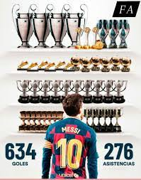

Lionel Andrés Messi (Spanish pronunciation: [ljoˈnel anˈdɾes ˈmesi] born 24 June 1987), also known as Leo Messi, is an Argentine professional footballer who plays as a forward for Ligue 1 club Paris Saint-Germain and captains the Argentina national team. Widely regarded as one of the greatest players of all time, Messi has won a record seven Ballon d'Or awards,[note 2] a record six European Golden Shoes, and in 2020 was named to the Ballon d'Or Dream Team. Until leaving the club in 2021, he had spent his entire professional career with Barcelona, where he won a club-record 35 trophies, including 10 La Liga titles, seven Copa del Rey titles and four UEFA Champions Leagues. With his country, he won the 2021 Copa América and the 2022 FIFA World Cup. A prolific goalscorer and creative playmaker, Messi holds the records for most goals in La Liga (474), most hat-tricks in La Liga (36) and the UEFA Champions League (8), and most assists in La Liga (192) and the Copa América (17). He has also the most international goals by a South American male (98). Messi has scored over 790 senior career goals for club and country, and has the most goals by a player for a single club (672).
Born and raised in central Argentina, Messi relocated to Spain at the age of 13 to join Barcelona, for whom he made his competitive debut aged 17 in October 2004. He established himself as an integral player for the club within the next three years, and in his first uninterrupted season in 2008–09 he helped Barcelona achieve the first treble in Spanish football; that year, aged 22, Messi won his first Ballon d'Or. Three successful seasons followed, with Messi winning four consecutive Ballons d'Or, making him the first player to win the award four times. During the 2011–12 season, he set the La Liga and European records for most goals scored in a single season, while establishing himself as Barcelona's all-time top scorer. The following two seasons, Messi finished second for the Ballon d'Or behind Cristiano Ronaldo (his perceived career rival), before regaining his best form during the 2014–15 campaign, becoming the all-time top scorer in La Liga and leading Barcelona to a historic second treble, after which he was awarded a fifth Ballon d'Or in 2015. Messi assumed captaincy of Barcelona in 2018, and in 2019 he won a record sixth Ballon d'Or. Out of contract, he signed for Paris Saint-Germain in August 2021.
Messi was born on 24 June 1987 in Rosario, Santa Fe, the third of four children of Jorge Messi, a steel factory manager, and his wife Celia Cuccittini, who worked in a magnet manufacturing workshop. On his father's side, he is of Italian and Spanish descent, the great-grandson of immigrants from the north-central Adriatic Marche region of Italy, and on his mother's side, he has primarily Italian ancestry.[6] Growing up in a tight-knit, football-loving family, "Leo" developed a passion for the sport from an early age, playing constantly with his older brothers, Rodrigo and Matías, and his cousins, Maximiliano and Emanuel Biancucchi, both of whom became professional footballers.[12] At the age of four he joined local club Grandoli, where he was coached by his father, though his earliest influence as a player came from his maternal grandmother, Celia, who accompanied him to training and matches.[13] He was greatly affected by her death, shortly before his eleventh birthday; since then, as a devout Roman Catholic, he has celebrated his goals by looking up and pointing to the sky in tribute to his grandmother.
The signature
| TEAMS | APPERANCES | GOALS | ASSISTS | ||
|---|---|---|---|---|---|
| Red cards | Yellow card | Games | |||
| FC Barcelona | 1 | 9 | 845 | 672 | 265 |
| PSG | 0 | 1 | 60 | 35 | 27 |
| TOTAL | |||||
| 2 | 1 | 10 | 1081 | 707 | 297 |